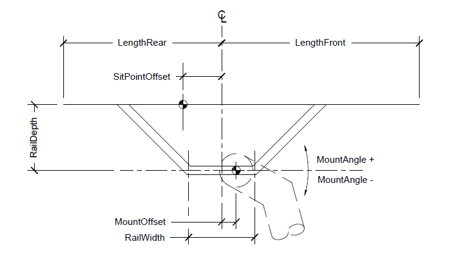

These are the measurements for the sadle. The saddle defines the sit point of the rider. The saddle is constructed from the center to forward and back. The center of the saddle is considered the middle of the rail (or middle of lateral adjustment). The sit point is an offset from this center line at the height of the rail depth.
This is rotational adjustment of the saddle. This is the rotation of the saddle in the seat post clamp relative to horizontal.
This is horizontal adjustment for mounting the saddle. This is how far forward or backward the saddle is mounted in the seat post clamp.
This is length of the saddle rails which determines the amount of horizontal adjustement in the seat post clamp.
This is depth of the saddle rails to the sit line (horizontal line defined by contact of the sit bones. This value controls the height of the sit point from mounting point.
This is offset from the center of the saddle to the sit point.
This is the forward projection or nose of the saddle. This is used for display and does not effect position.
This is the rear projection or seat of the saddle. This is used for display and does not effect position.